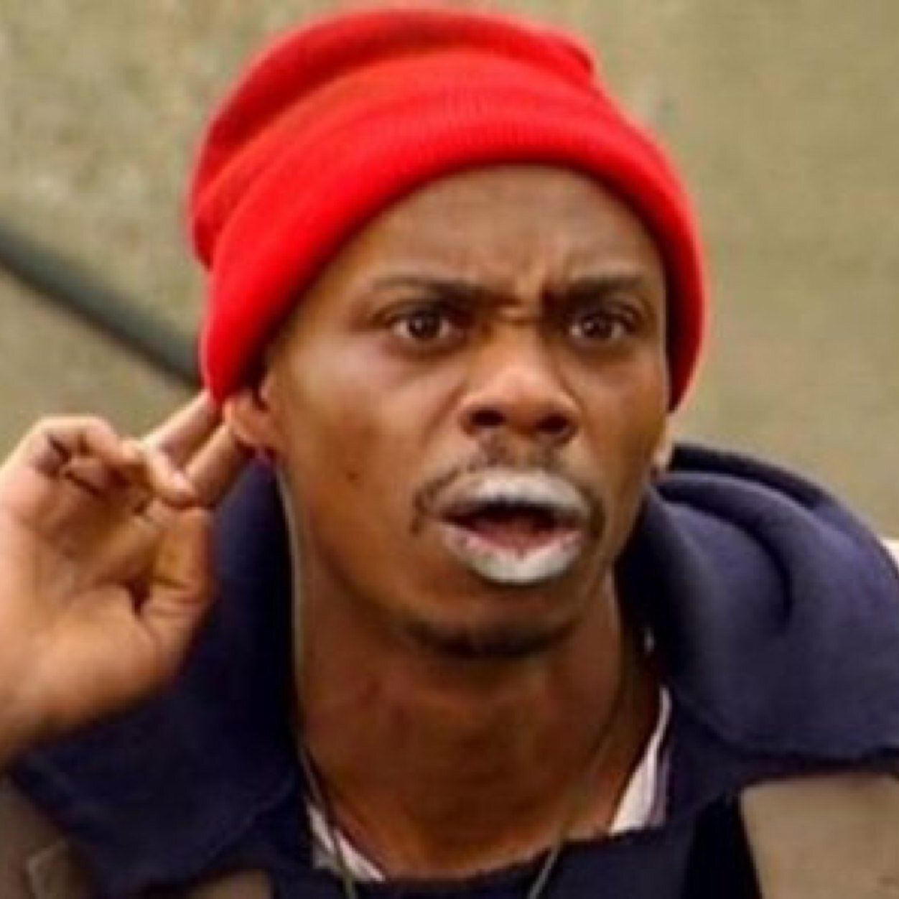

BEGINNING

David Khari Webber Chappelle was born August 24, 1973, in Washington, D.C. Chappelle's mother and father were professors. Chappelle began splitting time at his parents' homes in Washington, D.C. following their divorce when he was six years old.
Inspired by comedian Bill Cosby's sitcom, The Cosby Show, Chappelle knew he wanted a career in comedy. He began his career as a stand-up comedian while attending high school at the Duke Ellington School of Arts in Washington, D.C. His mother would often be required to accompany him to gigs because he was still a minor.
NOTE: As of the very moment of this presentation, Mr. Chappelle was only inspired by Bill Cosby's television show and not his drink-mixing and/or couching.
BIGGUMS
Unlike Crack Rock Consumption Artist, Tyrone Biggums, Chappelle is not a crackhead. His ability to portray Biggums is just a testimony to his high degree of talent.
Despite his uncanny resemblance, Mr. Biggums is of no relation to this pancake slangin' diva.
{kind=link}
Mr. Biggums would like to thank the NSS Academy for nominating his friend, Mr. David Chappelle.
Questions for Mr. Biggums can be directed to john@NashvilleSoftwareSchool.com
FAMILY

Chappelle and his wife, Elaine Erfe, have been married since 2001.
The couple reside on a 65-acre farm just outside Yellow Springs, Ohio, with their two sons (Sulayman and Ibrahim) and daughter (Sonal).